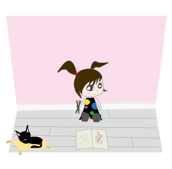

Plötsligt dyker Emma pappa upp i rummet, för det var just det som Emma hade ritat: Hennes familj som var tillsammans igen.
Emmas föräldrar kramar Emma och kramar varandra lyckligt.
Man kan ha alla saker i världen, tänker Emma, men inget slår när man är tillsammans med sina favoritmänniskor i världen. Fast i och för sig, en hund är inte fel det heller!
SLUT